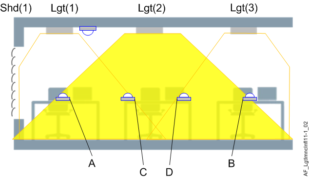

Lighting influence on illuminance (LgtImncInfl11)
Overview
This application function "Lighting influence on illuminance 11" (LgtImncInfl11) calculates the influence on the neighboring areas. It provides the values for the neighbor's lighting control.
The AF only makes sense if the neighbors have lighting control (LgtBrgtSwi11 or LgtConstCtl11).
Function

This AF can be used if several lighting zones are present in a room segment. The figure shows three zones, each controlled by an AF Lgt11 with the corresponding lighting output. Lgt(2) also illuminates the desks of Lgt(1), (front) and Lgt(3), (rear).
- Measure the two illuminance values [lx] for "front" (A, ImncInflMaxFnt) and "rear" (B, ImncInflMaxRer), at 100% lighting power of Lgt(2).
- The AF multiplies these values by the present lighting power of Lgt(2) and provides them in the two BACnet objects LgtImncInflFnt and LgtImncInflRer.
- The neighboring lighting control AFs have collection objects to which LgtImncInflFnt / LgtImncInflRer must be assigned: LgtImncInflFnt is used for Lgt(1), LgtImncInflRer is used for Lgt(3).
The lighting power of Lgt(1) and Lgt(3) is reduced accordingly.
The same procedure applies for the influence of Lgt(1) and Lgt(3) on Lgt(2):
- Measure the illuminance value [lx] of Lgt(1) for rear (C, ImncInflMaxRer).
- Measure the illuminance value of Lgt(3) for front (D, ImncInflMaxFnt).
- The lighting control AF in Lgt(2) has a collection object to which LgtImncInflRer(1) and LgtImncInflFnt(3) must be assigned.
Additional AFs LgtImncInfl11 can be used to consider the influence of neighbors to the right and left.
Configuration
 Parameters
Parameters
Description | Parameter | Default value |
|---|---|---|
Maximum influence on illuminance, front | ImncInflMaxFnt | 0 [lx] |
Maximum influence on illuminance, rear | ImncInflMaxRer | 0 [lx] |
Interface
Interface | Description | Type | Ref. | Owned by |
|---|---|---|---|---|
LgtImncInflFnt | Lighting influence on illuminance, front | ACalcVal | ● | - |
LgtImncInflRer | Lighting influence on illuminance, rear | ACalcVal | ● | - |
Engineering and commissioning
A calibrated lux-meter is required for the configuration to get a good result.
Proceed as follows:
- Measure in a dark room, preferably without daylight.
- Measure the illuminance of the lamp at 100% with a lux-meter on the neighboring tables in the front / rear.
- Insert the values (lx) in parameters ImncInflMaxFnt / ImncInflMaxRer.